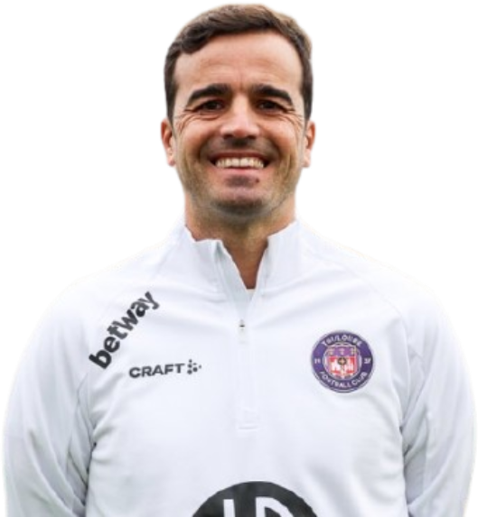
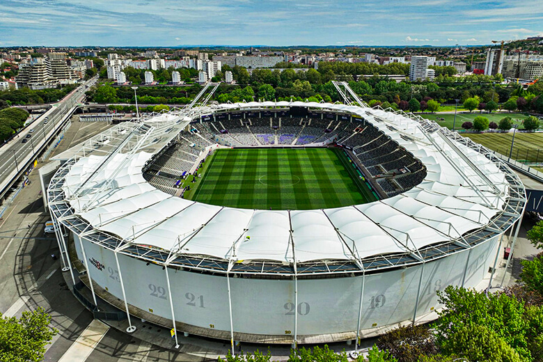

Treinador: Carles Martinez
A história de Carles Martínez Novell é a de um treinador que nunca foi jogador profissional e que construiu o seu caminho através da formação de elite, especialmente na famosa academia La Masia do FC Barcelona.

Estádio: Stadium de Toulouse
A história do Stadium de Toulouse é marcada por uma arquitetura única e pela sua localização privilegiada na Île du Ramier, uma ilha no rio Garona, o que lhe rendeu a alcunha de "Mini-Wembley" devido à sua semelhança estrutural com o antigo estádio inglês.

Estilo de Jogo:
O estilo de jogo de Carles Martínez no Toulouse FC reflete a sua formação na academia do FC Barcelona, privilegiando uma abordagem moderna, focada na posse de bola, na iniciativa ofensiva e numa saída de bola cuidada desde o guarda-redes.
"Debout. Toujours!"